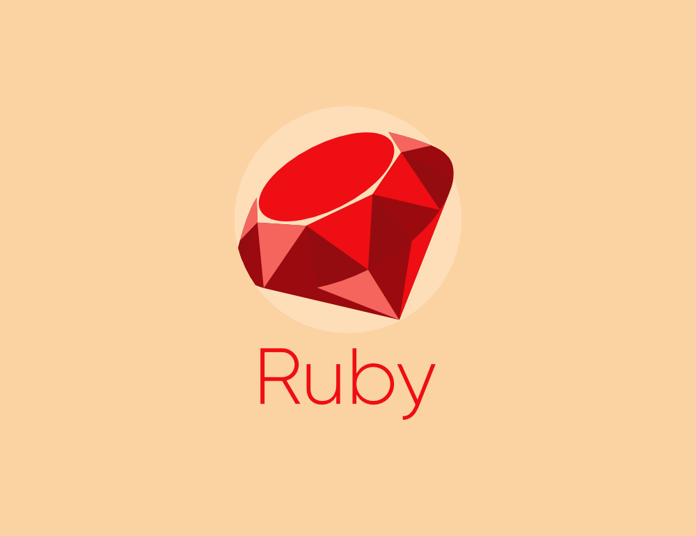

Java é uma linguagem de programação e plataforma computacional lançada pela primeira vez pela Sun Microsystems em 1995. Existem muitas aplicações e sites que não funcionarão, a menos que você tenha o Java instalado, e mais desses são criados todos os dias. O Java é rápido, seguro e confiável. De laptops a datacenters, consoles de games a supercomputadores científicos, telefones celulares à Internet, o Java está em todos os lugares! Python é uma linguagem de programação de alto nível — ou High Level Language —, dinâmica, interpretada, modular, multiplataforma e orientada a objetos — uma forma específica de organizar softwares onde, a grosso modo, os procedimentos estão submetidos às classes, o que possibilita maior controle e estabilidade de códigos para projetos de grandes proporções. C# (CSharp) é uma linguagem de programação orientada a objetos criada pela Microsoft, faz parte da sua plataforma .Net. A companhia baseou C# na linguagem C++ e Java.
 Ruby é uma linguagem de programação orientada principalmente para objetos, mas também pode ser funcional, por exemplo. Essa linguagem open-source foi inspirada em outras como Perl, Eiffel e LISP.